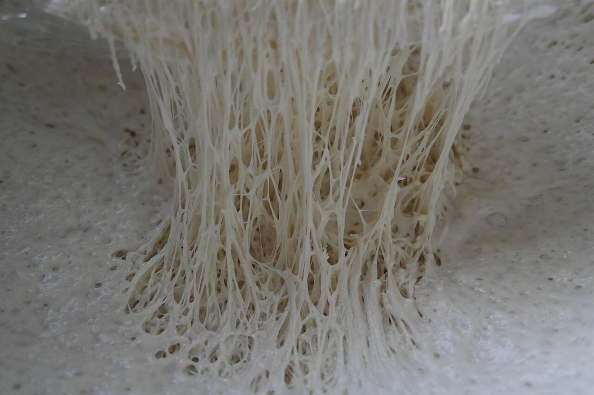
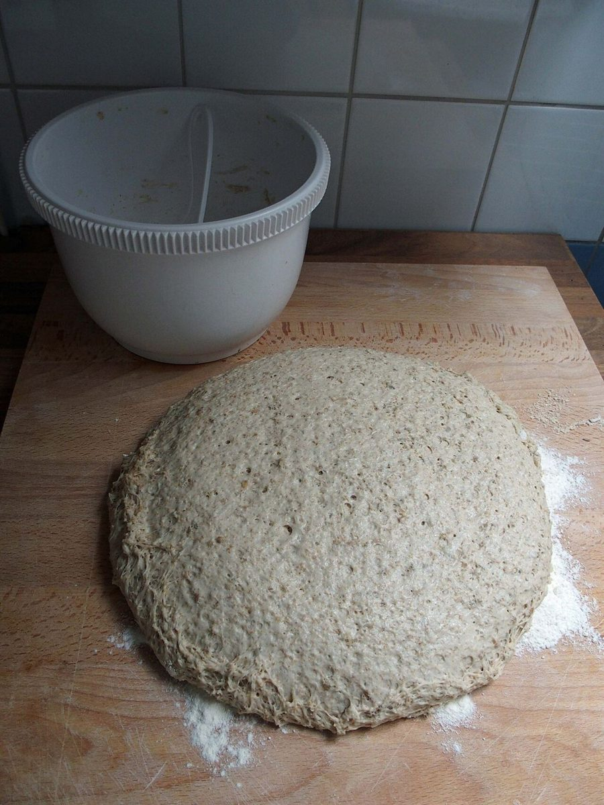

制作側の連想
「コウバ」の響きから、工程表を並べてみた
店名の由来は分かりません。制作側は、屋号の響きから「工」の字と作業の流れを連想し、パンができるまでを横棒の工程表(ガントチャート)で並べました。お店の理念・由来や、実際の作り方・時間とは無関係で、制作側の連想です。写真もフリー素材のイメージです。
イメージの工程表
むぎから、さますまで。
横の数字は時刻ではなく、ただの目盛りです。お店の実際の工程を示すものではありません。
工程
写真
むぎ

こな

こねる

ねかせる

かたちづくる

やく

さます

ご案内
お店のこと(確認できたものだけ)
| 所在地 | 〒507-0048 岐阜県多治見市池田町２丁目１４４ |
|---|---|
| 電話 | なし |
| 営業時間 | 準備中 |
| 定休日 | 準備中 |
| ご予約 | 準備中 |
| 駐車場 | 準備中 |
| SNS | Instagram @pankouba |